|
 Année de parution : 1999 Année de parution : 1999
Label : Xeric, Table Of The Elements
Format : 2xLP, Album
Captain Beefheart And His Magic Band
Grow Fins Vol. I: Just Got Back From The City / Electricity |
 Année de parution : 1992 Année de parution : 1992
Label : Beggars Banquet, Beggars Banquet
Format : LP, Album + LP + S/Edition
Mercury Rev
Yerself Is Steam / Lego My Ego |
Année de parution : 2014
Label : Spoon Records, Spoon Records
Format : LP, Album, RE, RM
Can
Soundtracks |
Année de parution : 1970
Label : Mercury
Format : LP, Album
Exuma
Exuma |
 Année de parution : 2007 Année de parution : 2007
Label : Jackpot Records
Format : LP, Album, Ltd, RE, RM
Wipers
Youth Of America |
|
|
Année de parution : 2013
Label : P.W. Elverum & Sun, Ltd.
Format : LP, Album, RE, RM, Gat
The Microphones
Mount Eerie |
 Année de parution : 1970 Année de parution : 1970
Label : Barclay
Format : LP, Album
Exuma
Exuma |
Année de parution : 1970
Label : Mercury
Format : LP, Album, Gat
Exuma
Exuma |
 Année de parution : 1991 Année de parution : 1991
Label : Shimmy Disc
Format : LP
Dogbowl
Cyclops Nuclear Submarine Captain |
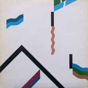Année de parution : 1987
Label : Harvest, Harvest
Format : LP, Album, RP
Wire
154 |
|
|
 Année de parution : 2019 Année de parution : 2019
Label : Morr Music
Format : 3xLP, Album, RE, RM, 20t
múm
Yesterday Was Dramatic - Today Is Ok |
 Année de parution : 2013 Année de parution : 2013
Label : Yep Roc Records
Format : LP, Album, RE, 180
Morphine
Good |
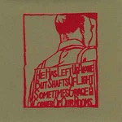Année de parution : 2000
Label : Constellation
Format : LP, Album
A Silver Mt. Zion
He Has Left Us Alone But Shafts Of Light Sometimes Grace The Corner Of Our Rooms… |
Année de parution : 1991
Label : LTM
Format : LP, Album
Tuxedomoon
The Ghost Sonata |
 Année de parution : 2018 Année de parution : 2018
Label : Virgin EMI Records
Format : LP, Album, RM, RP, 180
Brian Eno
Ambient 1 (Music For Airports) |
|
|
Année de parution : 2014
Label : Melodic
Format : LP, Album, Ltd
King Of The Mountains
Zoetrope |
Année de parution : 2014
Label : Naïve, Naïve
Format : 2xLP, Album + CD, Album + RE
M83
Dead Cities, Red Seas & Lost Ghosts |
Année de parution : 1985
Label : EMI
Format : 12", Maxi
Talk Talk
Life's What You Make It |
 Année de parution : 1985 Année de parution : 1985
Label : Epic, Epic
Format : LP, Album, Gat
Sade
Promise |
Année de parution : 1986
Label : Celluloid
Format : LP, Album, RE
Urban Sax, Gilbert Artman
Urban Sax |
|
|
Année de parution : 2016
Label : Posh Isolation
Format : LP, Album
Croatian Amor
Love Means Taking Action |
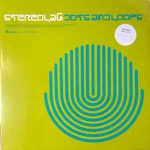Année de parution : 2019
Label : Warp Records, Duophonic Ultra High Frequency Disks
Format : 2xLP, Album, RE, RM + LP + Exp
Stereolab
Dots And Loops |
Année de parution : 1983
Label : A&M Records
Format : LP, Album
The Police
Synchronicity |
Année de parution : 2014
Label : Warp Records, Music70
Format : 12", EP, RE, RP, 140
Boards Of Canada
Trans Canada Highway |
 Année de parution : 2014 Année de parution : 2014
Label : Young Turks
Format : 12", EP, RP
FKA Twigs
EP2 |
|
|
 Année de parution : 2019 Année de parution : 2019
Label : Young Turks
Format : LP, Album
FKA Twigs
Magdalene |
 Année de parution : 1984 Année de parution : 1984
Label : EMI
Format : 12", Maxi
Talk Talk
It's My Life (US Mix) |
 Année de parution : 1982 Année de parution : 1982
Label : Liberty, Liberty
Format : LP, Comp, RE
The Stranglers
The Collection 1977-1982 |
Année de parution : 2013
Label : Music On Vinyl
Format : LP, Album, RE, 180
Tim Buckley
Starsailor |
 Année de parution : 2019 Année de parution : 2019
Label : Mute, Spoon Records
Format : LP, Album, Ltd, RE, Gre
Can
Ege Bamyasi |
|
|
Année de parution : 1975
Label : Disques Cellier, Disques Cellier, Disques Cellier
Format : LP
Marcel Cellier Présente: Le Mystère Des Voix Bulgares
Le Mystère Des Voix Bulgares (Volume 1) |
 Année de parution : 1981 Année de parution : 1981
Label : Polydor, 20th Century Fox, Polydor, 20th Century Fox
Format : LP, Album, Ltd
Vangelis
Chariots Of Fire |
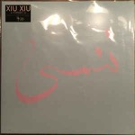Année de parution : 2017
Label : Teenage Menopause Records
Format : LP, Album
Xiu Xiu
Forget |
Année de parution : 2015
Label : Grönland Records
Format : LP, Album, RE, RM, Gat
Harmonia
Musik Von Harmonia |
 Année de parution : 2019 Année de parution : 2019
Label : Emotional Rescue
Format : LP, RE
Michael Stearns
Planetary Unfolding |
|
|
 Année de parution : 2018 Année de parution : 2018
Label : Fire Records
Format : LP, Album, RE
Pere Ubu
The Modern Dance |
 Année de parution : 2015 Année de parution : 2015
Label : Domino
Format : LP, Album
Dan Deacon
Gliss Riffer |
Année de parution : 2017
Label : All Saints
Format : 2xLP
Laraaji
Bring On The Sun |
 Année de parution : 1978 Année de parution : 1978
Label : Virgin
Format : LP, Album, Fir
Devo
Q: Are We Not Men? A: We Are Devo! |
 Année de parution : 1975 Année de parution : 1975
Label : Ohr, Cosmic Music
Format : LP, Album, Gat
Tangerine Dream
Alpha Centauri |
|
|
Année de parution : 1975
Label : Virgin
Format : LP, Album
Tangerine Dream
Ricochet |
Année de parution : 1976
Label : Virgin
Format : 2xLP, Album, MP, RE, Gat
Tangerine Dream
Zeit |
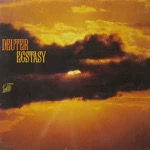Année de parution : 1979
Label : Kuckuck
Format : LP, Album
Deuter
Ecstasy |
Année de parution : 2017
Label : Sacred Bones Records
Format : LP, Album, Ltd, Bla
Blanck Mass
World Eater |
 Année de parution : 2019 Année de parution : 2019
Label : Charly Records
Format : LP, Album, RE, RM, S/Edition, Cle
Gong
Flying Teapot (Radio Gnome Invisible Part 1) |
|
|
Année de parution : 2016
Label : MG.ART
Format : LP, Album, RE
Manuel Göttsching
Inventions For Electric Guitar |
 Année de parution : 1985 Année de parution : 1985
Label : Polydor
Format : LP, Album, Gat
Evangelos Papathanassiou
Opéra Sauvage |
 Année de parution : 1975 Année de parution : 1975
Label : RCA Victor
Format : LP, Album, Gat
Vangelis
Heaven And Hell |
 Année de parution : 2016 Année de parution : 2016
Label : Universal Music Group International, Stax
Format : LP, Album, RE, RM, 180
Isaac Hayes
Hot Buttered Soul |
 Année de parution : 2013 Année de parution : 2013
Label : P.W. Elverum & Sun, Ltd.
Format : 2xLP, RE, RM, Gat
The Microphones
"The Glow" Pt. 2 |
|
|
 Année de parution : 2017 Année de parution : 2017
Label : Ici D'Ailleurs
Format : 2xLP, Album, RP, Gat
Matt Elliott
Drinking Songs |
Année de parution : 1975
Label : ECM Records
Format : 2xLP, Album, Gat
Keith Jarrett
The Köln Concert |
 Année de parution : 1971 Année de parution : 1971
Label : Harvest, Harvest
Format : LP, Album, Gat
Pink Floyd
Meddle |
 Année de parution : 1975 Année de parution : 1975
Label : Virgin, Caroline Records, Virgin
Format : LP, Album
Klaus Schulze
Timewind |
 Année de parution : 1978 Année de parution : 1978
Label : Warner Bros. Records
Format : LP, Album, Promo, Ban
Michael Hoenig
Departure From The Northern Wasteland |
|
|
Année de parution : 2007
Label : 4 Men With Beards
Format : LP, Album, RE
Tim Buckley
Lorca |
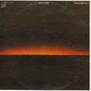Année de parution : 1978
Label : Kuckuck
Format : LP, Album
Deuter
Haleakala |
 Année de parution : 1974 Année de parution : 1974
Label : Virgin, Virgin
Format : LP, Album
Edgar Froese
Aqua |
Année de parution : 2019
Label : SlyVinyl Records
Format : LP, Album, Dlx, Ltd, RE, Bla
Menomena
I Am The Fun Blame Monster |
Année de parution : 2018
Label : Columbia, Legacy, Sony Music
Format : LP, Album, Ltd, RE, Red
Miles Davis
Sketches Of Spain |
|
|
 Année de parution : 2018 Année de parution : 2018
Label : Columbia, Legacy
Format : LP, Album, Ltd, RE, Blu
Miles Davis
Kind Of Blue |
 Année de parution : 2018 Année de parution : 2018
Label : Disques JMS
Format : LP, Album, RE
Henri Texier
Varech |
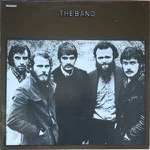Année de parution : ?
Label : Capitol Records
Format : LP, Album, RE
The Band
The Band |
Année de parution : 1981
Label : Editions EG
Format : LP, Album
Penguin Cafe Orchestra
Penguin Cafe Orchestra |
 Année de parution : 2016 Année de parution : 2016
Label : Reprise Records
Format : LP, Album, RE, 180
Captain Beefheart & The Magic Band
Lick My Decals Off, Baby |
|
|
Année de parution : 2013
Label : Music On Vinyl, Elektra
Format : LP, Album, RE, 180
Tim Buckley
Happy Sad |
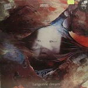Année de parution : 1976
Label : Virgin
Format : LP, Album
Tangerine Dream
Atem |
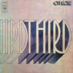Année de parution : 1970
Label : CBS
Format : 2xLP, Album, Gat
Soft Machine
Third |
 Année de parution : 1981 Année de parution : 1981
Label : Virgin, Virgin
Format : LP, Album
Public Image Limited
The Flowers Of Romance |
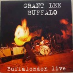Année de parution : 1993
Label : Slash, London Records
Format : 12", EP
Grant Lee Buffalo
Buffalondon Live |
|
|
Année de parution : 2014
Label : Music On Vinyl
Format : LP, Album, RE, RM, 180
Grant Lee Buffalo
Fuzzy |
 Année de parution : 1980 Année de parution : 1980
Label : Dindisc, Virgin
Format : 7", Single
Orchestral Manoeuvres In The Dark
Enola Gay |
 Année de parution : 1967 Année de parution : 1967
Label : Deram
Format : 7", Single, RP
Procol Harum
A Whiter Shade Of Pale |
Année de parution : 1983
Label : Virgin, Virgin
Format : 7", Single, RE
Ryuichi Sakamoto & David Sylvian
Forbidden Colours |
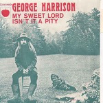Année de parution : 1970
Label : Apple Records, Apple Records
Format : 7", Single, Mono
George Harrison
My Sweet Lord / Isn't It A Pity |
|
|
Année de parution : 1976
Label : Capitol Records, Capitol Records
Format : 7", Single
Kraftwerk
Radioactivity |
Année de parution : 1976
Label : Capitol Records, Capitol Records
Format : 7", Single
Kraftwerk
Radioactivity |
 Année de parution : 1975 Année de parution : 1975
Label : Héloïse Disques
Format : 7", Single
Saint-Preux
Your Hair |
 Année de parution : 2019 Année de parution : 2019
Label : UMC, Mo Wax, UMC, Mo Wax, Island Records
Format : 2xLP, Album, Ltd, RE, Blu
DJ Shadow
Endtroducing... |
 Année de parution : 2008 Année de parution : 2008
Label : Go! Beat, Go! Beat
Format : LP, Album, RE, 180
Portishead
Dummy |
|
|
 Année de parution : 2012 Année de parution : 2012
Label : EMI
Format : LP, Album, RE, 180 + DVD-V, Album, RE, NTSC
Talk Talk
The Colour Of Spring |
Année de parution : 2009
Label : Elektra, Rhino Vinyl
Format : LP, Album, RE, 180
The Doors
Strange Days |
 Année de parution : 2017 Année de parution : 2017
Label : Rhino Records, Elektra
Format : LP, Album, Mono, RE, Gat
Tim Buckley
Goodbye And Hello |
 Année de parution : 2019 Année de parution : 2019
Label : Spiral Records
Format : LP, Album, Ltd, RM, Cle
Ornette Coleman
Change Of The Century |
 Année de parution : 2014 Année de parution : 2014
Label : Friday Music, Buddah Records, Sony Music
Format : LP, Album, RE, RM, 180
Captain Beefheart And His Magic Band
Mirror Man |
|
|
Année de parution : 2009
Label : Elektra, Rhino Vinyl
Format : LP, Album, RE, 180
The Doors
The Doors |
 Année de parution : 2016 Année de parution : 2016
Label : Tamla
Format : LP, Album, Gat
Marvin Gaye
What's Going On |
 Année de parution : 2015 Année de parution : 2015
Label : Music On Vinyl
Format : LP, Album, RE, 180
Kevin Ayers
Joy Of A Toy |
Année de parution : 2014
Label : Spoon Records
Format : 2xLP, Album, RE, RM, Gat
Can
Tago Mago |
Année de parution : 2014
Label : Charly Records
Format : LP, Album, RE, RM + LP, Album, Mono, RE, RM
Red Krayola With The Familiar Ugly
The Parable Of Arable Land |
|
|
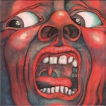Année de parution : 2010
Label : Discipline Global Mobile, Panegyric, Inner Knot
Format : LP, Album, RE, 200
King Crimson
In The Court Of The Crimson King |
Année de parution : 2009
Label : Barclay, Universal Music France
Format : 2xLP, Album, RE
Alain Bashung
Bleu Pétrole |
 Année de parution : 2016 Année de parution : 2016
Label : Infiné
Format : 2xLP, Album
Murcof x Vanessa Wagner
Statea |
 Année de parution : 2013 Année de parution : 2013
Label : ATCO Records, Rhino Records
Format : LP, Album, RE
Dr. John
Gris-Gris |
 Année de parution : 2019 Année de parution : 2019
Label : Sacred Bones Records
Format : LP
Blanck Mass
Animated Violence Mild |
|
|
Année de parution : 2019
Label : BMG, Mute
Format : LP, Album, Dlx, Ltd, RE, Red
Suicide
Suicide |
Année de parution : 1972
Label : Philips
Format : LP, Album, RE
Boris Vian
Boris Vian |
 Année de parution : 2016 Année de parution : 2016
Label : Mom + Pop
Format : LP, Album, Tur
Bayonne
Primitives |
Année de parution : 1975
Label : Virgin, Virgin
Format : LP, Album, Gat
Tangerine Dream
Rubycon |
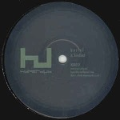Année de parution : 2012
Label : Hyperdub
Format : 12", EP
Burial
Kindred |
|
|
 Année de parution : 2017 Année de parution : 2017
Label : Mvka, Radicalis
Format : LP, Album, Ltd, Gre
Zeal And Ardor
Devil Is Fine |
Année de parution : 2016
Label : Pink Floyd Records, Columbia
Format : LP, Album, RE, RM, 180
Pink Floyd
The Piper At The Gates Of Dawn |
Année de parution : ?
Label : Philips
Format : LP, Album
Ariel Ramirez, Los Fronterizos, Cantoría De La Basílica Del Socorro
Misa Criolla |
Année de parution : 1970
Label : Rare Earth, Rare Earth
Format : LP, Album
Rare Earth
Get Ready |
Année de parution : 2010
Label : Grönland Records, Grönland Records
Format : LP, Album, RE
Neu!
Neu! '75 |
|
|
Année de parution : 2013
Label : Wah Wah Records, Wah Wah Records
Format : LP, Album, RE + 7", RE
Popol Vuh
Hosianna Mantra |
 Année de parution : 1972 Année de parution : 1972
Label : Archiv Produktion
Format : 3xLP
Gong Kebyar, Sebatu
Bali: Gamelan Music From Sebatu |
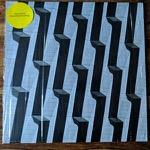Année de parution : 2019
Label : Village Green
Format : 12", EP, Cle
Snow Palms
Everthing Ascending |
Année de parution : 1982
Label : Warner Bros. Records, Warner Bros. Records
Format : LP, Album
Laurie Anderson
Big Science |
 Année de parution : 2015 Année de parution : 2015
Label : Tricatel
Format : LP, Album, Ltd
Chassol
Big Sun |
|
|
 Année de parution : 2017 Année de parution : 2017
Label : Virgin EMI Records, UMC
Format : 2x12", Album, Ltd, RE, RM
Brian Eno
Another Green World |
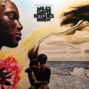Année de parution : 2016
Label : Columbia, Sony Music, Legacy
Format : 2xLP, Album, RE, 180
Miles Davis
Bitches Brew |
 Année de parution : ? Année de parution : ?
Label : Polydor
Format : LP, Album, RE
Brian Eno
Taking Tiger Mountain (By Strategy) |
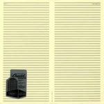Année de parution : 2009
Label : Virgin
Format : LP, Album, Ltd, RE, RM, 180
Faust
Faust IV |
 Année de parution : 1974 Année de parution : 1974
Label : Virgin, Virgin
Format : LP, Album
Klaus Schulze
Blackdance |
|
|
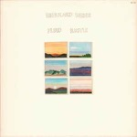Année de parution : 1979
Label : ECM Records, ECM Records
Format : LP, Album
Eberhard Weber
Fluid Rustle |
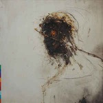Année de parution : 1989
Label : Real World Records, Virgin
Format : 2xLP, Album
Peter Gabriel
Passion |
Année de parution : 1974
Label : Virgin, Virgin
Format : LP, Album, RP
Mike Oldfield
Tubular Bells |
 Année de parution : 1979 Année de parution : 1979
Label : Atem
Format : LP, Album
This Heat
This Heat |
Année de parution : 2015
Label : Erato, Warner Classics
Format : LP, Comp
Arvo Pärt
The Sound Of Arvo Pärt |
|
|
 Année de parution : 1972 Année de parution : 1972
Label : Warner Bros. Records, Warner Bros. Records
Format : LP, Album, RE
Various
Orange Mécanique |
 Année de parution : 1984 Année de parution : 1984
Label : London Records
Format : LP
Erik Satie - Pascal Rogé
3 Gymnopédies - Oeuvres Pour Piano - |
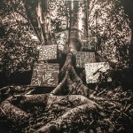Année de parution : 2017
Label : Young Turks
Format : 12", EP
Kamasi Washington
Harmony Of Difference |
Année de parution : 1992
Label : Touch And Go
Format : 12", EP, RE
Big Black
Bulldozer |
 Année de parution : 1985 Année de parution : 1985
Label : Island Records, Island Records, ZTT
Format : LP, Album
The Art Of Noise
(Who's Afraid Of?) The Art Of Noise |
|
|
Année de parution : 1974
Label : Virgin, Virgin
Format : LP, Album
Tangerine Dream
Phaedra |
Année de parution : 2012
Label : Caprice Records
Format : 2xLP, Album, RE, RM, Gat
Don Cherry
Organic Music Society |
 Année de parution : 2016 Année de parution : 2016
Label : Laced Records
Format : 2xLP, Album
65daysofstatic
No Man's Sky: Music For An Infinite Universe |
 Année de parution : ? Année de parution : ?
Label : Virgin
Format : LP, Album
Mike Oldfield
Hergest Ridge |
 Année de parution : 1969 Année de parution : 1969
Label : Columbia Masterworks
Format : LP, Album
Terry Riley
A Rainbow In Curved Air |
|
|
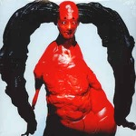Année de parution : 2016
Label : Mute
Format : 2xLP, Album, Red
Arca
Mutant |
Année de parution : 2014
Label : Harvest, Harvest, Harvest
Format : LP, Album, RE, Gat
Syd Barrett
The Madcap Laughs |
Année de parution : 2019
Label : Zappa Records, Zappa Records
Format : LP, Album, Ltd, RE, RM, Hot
Frank Zappa
Hot Rats |
Année de parution : 1978
Label : Brain, Brain
Format : 2xLP, Album
Klaus Schulze
"X" |
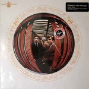Année de parution : 2011
Label : Buddah Records, Music On Vinyl, RCA
Format : LP, Album, RE, 180 + LP, 180
Captain Beefheart And His Magic Band
Safe As Milk |
|
|
Année de parution : 2016
Label : Posh Isolation
Format : LP
Kyo
Aktuel Musik |
Année de parution : 2017
Label : Posh Isolation
Format : LP, Album, RM
Erik Enocksson
Farväl Falkenberg |
 Année de parution : 2008 Année de parution : 2008
Label : Domino
Format : LP, Album, RE
Robert Wyatt
Rock Bottom |
Année de parution : 2015
Label : Columbia, Legacy, Music On Vinyl
Format : LP, Album, RE, 180
Miles Davis
In A Silent Way |
 Année de parution : 2007 Année de parution : 2007
Label : Lilith
Format : LP, Album, RE, Cle
Faust
Faust |
|
|
 Année de parution : 2011 Année de parution : 2011
Label : Ba Da Bing!, Universal Music Special Markets
Format : LP, Album, RE
Talk Talk
Laughing Stock |
 Année de parution : 2012 Année de parution : 2012
Label : Parlophone, Parlophone
Format : LP, Album, RE, 180 + DVD-V, Album, RE, NTSC
Talk Talk
Spirit Of Eden |
Année de parution : 2018
Label : Planet Mu
Format : 2xLP, Album, Pin
Ital Tek
Bodied |
 Année de parution : 2009 Année de parution : 2009
Label : Carpark Records
Format : 2xLP, Album
Dan Deacon
Bromst |
Année de parution : 1976
Label : Asylum Records, Asylum Records
Format : 7", Single
Eagles
Hotel California |
|
|
Année de parution : 1971
Label : Warner Bros. Records
Format : LP
Michel Legrand
Summer Of '42 |
 Année de parution : 1979 Année de parution : 1979
Label : Polydor
Format : LP, Album, RE, RP
Evangelos Papathanassiou
L'Apocalypse Des Animaux |
Année de parution : 1979
Label : Polydor
Format : LP, Album, RE, RP
Evangelos Papathanassiou
L'Apocalypse Des Animaux |
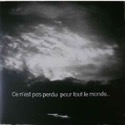Année de parution : 2016
Label : Rykodisc, Music On Vinyl
Format : LP, Album, RE, 180
Morphine
Cure For Pain |
 Année de parution : 2015 Année de parution : 2015
Label : Ici D'Ailleurs
Format : 2xLP, Album, RE
Diabologum
#3 |
|
|
Année de parution : 2013
Label : Ici D'Ailleurs
Format : 2xLP, Album + CD, Album
Mendelson
Mendelson |
 Année de parution : 2009 Année de parution : 2009
Label : Barclay, Universal Music France
Format : 2xLP, Album, RE
Alain Bashung
L'Imprudence |
 Année de parution : 2016 Année de parution : 2016
Label : Maison Barclay, Back To Black, Universal
Format : LP, Album, Ltd, 180
Alain Bashung
Fantaisie militaire |
 Année de parution : 2000 Année de parution : 2000
Label : Constellation
Format : 2xLP, Album
Godspeed You Black Emperor!
Lift Your Skinny Fists Like Antennas To Heaven |
 Année de parution : 2002 Année de parution : 2002
Label : Constellation, Constellation
Format : 2xLP, Album
Godspeed You Black Emperor!
Yanqui U.X.O. |
|
|
Année de parution : 2012
Label : Constellation
Format : LP + 7" + Album
Godspeed You Black Emperor!
'Allelujah! Don't Bend Ascend |
 Année de parution : 1981 Année de parution : 1981
Label : Rough Trade
Format : LP, Album
This Heat
Deceit |
 Année de parution : 2018 Année de parution : 2018
Label : Gobstopper Records
Format : 12", EP
Mr. Mitch
Primary Progressive |
 Année de parution : 2016 Année de parution : 2016
Label : Universal Music France, Mercury
Format : LP, Album, RE
Daniel Darc
Crèvecœur |
 Année de parution : 2017 Année de parution : 2017
Label : Virgin EMI Records
Format : LP, Album, RE, RM
Brian Eno
Before And After Science |
|
|
 Année de parution : 2017 Année de parution : 2017
Label : Columbia Masterworks, Caribou Records, Legacy
Format : LP, Album, RE
Moondog
Moondog |
Année de parution : 2004
Label : Touch And Go, Touch And Go
Format : LP, Album, RP
Slint
Spiderland |
Année de parution : 2016
Label : Thrill Jockey
Format : LP, Album, RP
Tortoise
Tortoise |
Année de parution : 2015
Label : Touch And Go
Format : LP, Album, RE, RM
Big Black
Atomizer |
Année de parution : 1976
Label : Pausa Records
Format : LP, Album, Gat
Gian Piero Reverberi
Timer |
|
|
Année de parution : ?
Label : Trianon
Format : LP
Antonín Dvořák, Berliner Philharmoniker, Rudolf Kempe
Symphonie Du Nouveau Monde N°5 En Mi Mineur Op.95 |
Année de parution : 1990
Label : Real World Records, Virgin
Format : LP, Album
Various
The Mahabharata - Original Soundtrack |
Année de parution : 1972
Label : Fontana
Format : LP, Album, Gat
Alan Stivell
Renaissance De La Harpe Celtique |
Année de parution : 2019
Label : Lo Recordings
Format : 2xLP, Album, Comp
Various
Spaciousness: Music Without Boundaries |
 Année de parution : 2007 Année de parution : 2007
Label : Eisenwald Tonschmiede
Format : LP, Album, Ltd, Pic
Drudkh
Forgotten Legends |
|
|
 Année de parution : 2018 Année de parution : 2018
Label : Astralwerks
Format : LP, Album, RE, RM
Brian Eno
Here Come The Warm Jets |
Année de parution : 2016
Label : Virgin, Circa, Wild Bunch Records
Format : LP, Album, RE, 180
Massive Attack
Blue Lines |
Année de parution : 2018
Label : Gondwana Records
Format : 12", EP
Sunda Arc
Flicker |
 Année de parution : 2017 Année de parution : 2017
Label : Telephone Explosion Records
Format : LP, Album, Dlx, RE
Steve Roach
Structures From Silence |
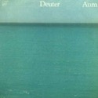Année de parution : 1976
Label : Contona Music
Format : LP
Various
Disco Explosion |
|
|
 Année de parution : 1979 Année de parution : 1979
Label : Kuckuck
Format : LP, Album, RE
Deuter
Aum |
Année de parution : 1982
Label : Kuckuck, Kuckuck
Format : LP, Album, RE
Kitaro
Oasis |
Année de parution : 1977
Label : Sky Records
Format : LP, Album, RP
Michael Rother
Flammende Herzen |
 Année de parution : 2015 Année de parution : 2015
Label : Verve Records, Verve Records
Format : LP, Album, RE, RM, RP, 45t
The Velvet Underground & Nico
The Velvet Underground & Nico |
Année de parution : ?
Label : Deutsche Grammophon
Format : LP, Album, Gat
Antonio Vivaldi, Michel Schwalbé & Berliner Philharmoniker, Herbert von Karajan
Les Quatre Saisons |
|
|
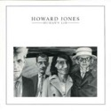Année de parution : 1976
Label : Deutsche Grammophon
Format : LP, Album, Gat
Frédéric Chopin - Maurizio Pollini
Polonaises |
Année de parution : 1984
Label : WEA, WEA
Format : LP, Album, Bla
Howard Jones
Human's Lib |
 Année de parution : ? Année de parution : ?
Label : Atlantic, Atlantic, Atlantic
Format : LP, Album, RE
AC/DC
If You Want Blood You've Got It |
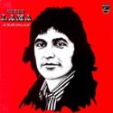Année de parution : 1983
Label : Polydor
Format : LP, Album
Accept
Restless And Wild |
 Année de parution : 1973 Année de parution : 1973
Label : Philips
Format : LP, Gat
Serge Lama
Je Suis Malade |
|
|
 Année de parution : 1979 Année de parution : 1979
Label : Harvest
Format : 2xLP, Album, Gat
Pink Floyd
The Wall |
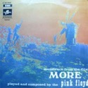Année de parution : 1983
Label : Harvest, Harvest
Format : LP, Album, Gat
Pink Floyd
The Final Cut |
Année de parution : 1969
Label : Columbia
Format : LP, Album
Pink Floyd
Soundtrack From The Film "More" |
Année de parution : 1985
Label : A&M Records
Format : LP, Album, Emb
Supertramp
Brother Where You Bound |
Année de parution : 1979
Label : A&M Records
Format : LP, Album
Supertramp
Breakfast In America |
|
|
 Année de parution : ? Année de parution : ?
Label : CBS, CBS
Format : LP, Comp, RE
Simon & Garfunkel
Simon And Garfunkel's Greatest Hits |
 Année de parution : 1964 Année de parution : 1964
Label : La Voix De Son Maître
Format : 3xLP, Box
Maria Callas, Nicolai Gedda, Robert Massard And Andréa Guiot With Orchestre National De L'Opéra De Paris Conducted By Georges Prêtre
Carmen |
 Année de parution : ? Année de parution : ?
Label : CBS
Format : LP
Raymond Trouard - Frédéric Chopin
Les 14 Valses |
Année de parution : ?
Label : Trianon
Format : LP
Ludwig van Beethoven, Aline Van Barentzen
Trois Sonates - Clair De Lune - Pathétique - Appassionata |
Année de parution : 1984
Label : Forlane
Format : LP
Ensemble Instrumental De France, Philip Bride
L'Adagio D'Albinoni |
|
|
Année de parution : 1979
Label : Plaisir Du Classique
Format : 2xLP
Wolfgang Amadeus Mozart, Eric Heidsieck, Orchestre De La Société Des Concerts Du Conservatoire, André Vandernoot
Concertos Pour Piano Nos 20, 23, 25 Et 27 |
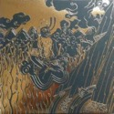Année de parution : 1997
Label : Constellation
Format : LP, Album, RE, Tra
Godspeed You Black Emperor!
F♯ A♯ ∞ |
 Année de parution : 2015 Année de parution : 2015
Label : Ván
Format : 7", S/Sided, Etch, RP, Gol
Urfaust
Die Erste Levitation |
 Année de parution : 2008 Année de parution : 2008
Label : Back On Black
Format : 2xLP, Album, RE, Gat
Burzum
Filosofem |
 Année de parution : 2008 Année de parution : 2008
Label : Vinyl Lovers
Format : LP, Album, RE, 180
The Velvet Underground
White Light/White Heat |
|
|
 Année de parution : 2009 Année de parution : 2009
Label : Ván
Format : 12", EP, Whi
Urfaust
Einsiedler |
 Année de parution : 2004 Année de parution : 2004
Label : Constellation
Format : 12", EP, RE
Godspeed You Black Emperor!
Slow Riot For New Zero Kanada E.P. |
 Année de parution : 2010 Année de parution : 2010
Label : Grönland Records, Grönland Records
Format : LP, Album, RE, Whi
Neu!
Neu! |
Année de parution : 2015
Label : DOL
Format : LP, Album, RE, 180
Charles Mingus
Blues & Roots |
Année de parution : 2016
Label : Recital
Format : LP, Album, Ltd
Daniel W. Schmidt And The Berkeley Gamelan Ensemble
In My Arms, Many Flowers |
|
|
 Année de parution : ? Année de parution : ?
Label : 4AD
Format : LP, Album, RE, 180
Pixies
Doolittle |
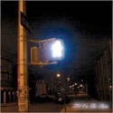Année de parution : ?
Label : 4AD
Format : LP, Album, RE
Pixies
Surfer Rosa |
 Année de parution : 2003 Année de parution : 2003
Label : Touch And Go
Format : 12", EP
TV On The Radio
Young Liars |
Année de parution : 1977
Label : Harvest, Harvest
Format : LP, Album, Gat
Pink Floyd
Animals |
 Année de parution : ? Année de parution : ?
Label : Vertigo, Vertigo
Format : LP, Album, Gat
Black Sabbath
Black Sabbath |
|
|
 Année de parution : 2016 Année de parution : 2016
Label : Island Records
Format : LP, Album, RE, RM, 180
Tom Waits
Swordfishtrombones |
Année de parution : 2016
Label : Thrill Jockey
Format : LP, Album, RE, 180
Tortoise
Millions Now Living Will Never Die |
 Année de parution : 2018 Année de parution : 2018
Label : True Panther Sounds
Format : LP, Album
Bliss Signal
Bliss Signal |
 Année de parution : 2002 Année de parution : 2002
Label : Sundazed Music
Format : LP, Album, Mono, RE
Booker T & The MG's
Green Onions |
Année de parution : 2014
Label : Temporary Residence Limited
Format : LP, Album
Watter
This World |
|
|
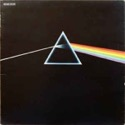Année de parution : 2009
Label : Elektra, Rhino Vinyl
Format : LP, Album, RE, 180
The Doors
L.A. Woman |
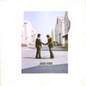Année de parution : ?
Label : Harvest, Harvest
Format : LP, Album, RE, Gat
Pink Floyd
The Dark Side Of The Moon |
Année de parution : 1975
Label : Harvest, Harvest
Format : LP, Album
Pink Floyd
Wish You Were Here |
Année de parution : 1973
Label : Parlophone
Format : LP, Album
The Beatles
Sgt. Pepper's Lonely Hearts Club Band |
 Année de parution : 2014 Année de parution : 2014
Label : ATP Recordings
Format : 2xLP, Album, RE, 180
Fuck Buttons
Street Horrrsing |
|
|
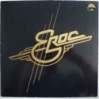Année de parution : ?
Label : Ariola
Format : LP, Album, Quad, SQ
Eberhard Schoener
Meditation |
 Année de parution : ? Année de parution : ?
Label : Brain
Format : LP, Album, RE
Eroc
Eroc |
 Année de parution : 1980 Année de parution : 1980
Label : Kuckuck
Format : LP, Album
Peter Michael Hamel
Colours Of Time |
 Année de parution : 1981 Année de parution : 1981
Label : Kuckuck
Format : 2xLP, Album
Deuter
Silence Is The Answer / Buddham Sharnam Gachchami |
 Année de parution : ? Année de parution : ?
Label : Nova, Nova
Format : LP, Album, RP
La Düsseldorf
La Düsseldorf |
|
|
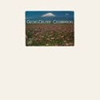Année de parution : 1978
Label : Sky Records, Sky Records
Format : LP, Album
Wolfgang Riechmann
Wunderbar |
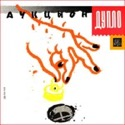Année de parution : ?
Label : Kuckuck
Format : LP, Album, RE
Deuter
Celebration |
 Année de parution : 1990 Année de parution : 1990
Label : ЭРИО
Format : LP, Album
Аукцыон
Дупло |
 Année de parution : 2019 Année de parution : 2019
Label : Duophonic Ultra High Frequency Disks, Warp Records
Format : 2xLP, Album, RE, RM + LP + Exp
Stereolab
Transient Random-Noise Bursts With Announcements |
Année de parution : 2014
Label : Spoon Records, Mute
Format : LP, Album, RE, RM, 180
Can
Soon Over Babaluma |
|
|
 Année de parution : 2018 Année de parution : 2018
Label : Kranky
Format : 2xLP, Album
Dedekind Cut
Tahoe |
Année de parution : 2017
Label : XL Recordings
Format : LP, Album
Arca
Arca |
Année de parution : 1967
Label : Barclay, Barclay
Format : 7", EP
The Jimi Hendrix Experience
The Wind Cries Mary / Purple Haze |
Année de parution : 2016
Label : Fiction Records, Fiction Records, Polydor, Polydor, Universal Music Catalogue, Universal Music Catalogue
Format : 2xLP, Album, RE, RM, 180
The Cure
Disintegration |
Année de parution : 2016
Label : Knitting Factory Records
Format : LP, Album, RE
Fela Kuti & The Africa 70
Gentleman |
|
|
 Année de parution : 2017 Année de parution : 2017
Label : The Point Of Departure Recording Company
Format : 2xLP, Album
Alessandro Cortini
Avanti |
Année de parution : 2013
Label : DOL
Format : LP, Album, RE, 180
Grant Green
Idle Moments |
Année de parution : 2020
Label : Fact Of Being
Format : LP, Album, RE
Iasos
Angelic Music |
 Année de parution : 2015 Année de parution : 2015
Label : Pan European Recording
Format : 2xLP, Album
Flavien Berger
Léviathan |
Année de parution : 2013
Label : Domino, Domino
Format : 2xLP, 180 + CD + Album, RE
Four Tet
Rounds |
|
|
 Année de parution : 2003 Année de parution : 2003
Label : Ninja Tune
Format : 2xLP, Album
Fog
Ether Teeth |
Année de parution : 2003
Label : Leaf, Leaf
Format : LP, Album, Ltd, Cle
Manitoba
Up In Flames |
Année de parution : ?
Label : Cinq 7, Wagram Music
Format : 2xLP, Album, RE
Dominique A.
L'horizon |
Année de parution : 2012
Label : Cinq 7, Wagram Music
Format : LP, Album, Ltd
Rover
Rover |
Année de parution : 2015
Label : DreamWorks Records, DreamWorks Records
Format : LP, Album, RE, 180
Eels
Beautiful Freak |
|
|
Année de parution : 2019
Label : Trovarobato
Format : LP, Album, RP, Gat
IOSONOUNCANE
DIE |
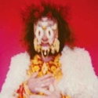Année de parution : 2014
Label : Numero Group, Numero Group
Format : 2xLP, Album
Jordan De La Sierra
Gymnosphere: Song Of The Rose |
Année de parution : 2016
Label : Capitol Records, ATO Records
Format : LP, Album, Gat
Jim James
Eternally Even |
 Année de parution : 2004 Année de parution : 2004
Label : Touch And Go
Format : LP + LP, S/Sided, Etch + Album
TV On The Radio
Desperate Youth, Blood Thirsty Babes |
 Année de parution : 2016 Année de parution : 2016
Label : Holodeck
Format : LP, Album, Ltd
Troller
Graphic |
|
|
 Année de parution : 2017 Année de parution : 2017
Label : Editions Mego
Format : LP, Album
Loke Rahbek, Frederik Valentin
Buy Corals Online |
Année de parution : 2019
Label : Infiné
Format : 12", EP
Vanessa Wagner
[Inland] Versions |
 Année de parution : 2017 Année de parution : 2017
Label : XL Recordings
Format : LP, Album
Arca
Arca |
 Année de parution : 2003 Année de parution : 2003
Label : Definitive Jux
Format : 12"
RJD2
The Horror |
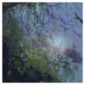Année de parution : 2003
Label : Ninja Tune
Format : 2xLP, Album
Fog
Ether Teeth |
|
|
 Année de parution : 2015 Année de parution : 2015
Label : Black Milk Music
Format : LP, Album, Ltd
M.A BEAT!
Drowning For Love |
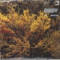Année de parution : 2018
Label : Kompakt
Format : 3xLP, Album, Ltd, Cle + Box
Kasper Bjørke Quartet
The Fifty Eleven Project |
 Année de parution : 2019 Année de parution : 2019
Label : Mexican Summer
Format : Vinyl, LP
Jefre Cantu-Ledesma
Tracing Back The Radiance |
Année de parution : 2020
Label : Posh Isolation
Format : Vinyl, LP, Album
Frederik Valentin & Loke Rahbek
Elephant |
 Année de parution : 2015 Année de parution : 2015
Label : Planet Mu
Format : Vinyl, 12", EP
Claude Speeed
Sun Czar Temple |
|
|
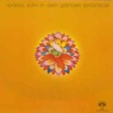Année de parution : 2017
Label : Posh Isolation
Format : Vinyl, LP, Album
Kyo
I Musik |
 Année de parution : 1972 Année de parution : 1972
Label : Pilz
Format : Vinyl, LP, Album
Popol Vuh
In Den Gärten Pharaos |
 Année de parution : 2017 Année de parution : 2017
Label : Warp Records
Format : 2 × Vinyl, LP, Album
Mount Kimbie
Love What Survives |
 Année de parution : 2017 Année de parution : 2017
Label : Beatnik Creative
Format : Vinyl, LP, Limited Edition, Transparent Mint Green
Turtle
Human |
 Année de parution : 2019 Année de parution : 2019
Label : Music On Vinyl
Format : Vinyl, LP, Album
Beaver & Krause
Gandharva |
|
|
 Année de parution : 2018 Année de parution : 2018
Label : Pan European Recording
Format : 2 × Vinyl, 12", Compilation, Limited Edition, Reissue
Flavien Berger
Glitter Gaze - Mars Balnéaire |
 Année de parution : 2012 Année de parution : 2012
Label : Circus Company
Format : Vinyl, LP, Album, Reissue
Nicolas Jaar
Space Is Only Noise |
 Année de parution : 1978 Année de parution : 1978
Label : Ralph Records
Format : Vinyl, LP, Album, Green Labels
The Residents
Not Available |
 Année de parution : 2006 Année de parution : 2006
Label : Lex Records
Format : 2 × Vinyl, LP, Album
Subtle
For Hero: For Fool |
 Année de parution : 2016 Année de parution : 2016
Label : Public House Recordings
Format : Vinyl, LP, Album, Limited Edition
Manyfingers
Our Worn Shadow |
|
|
 Année de parution : 2018 Année de parution : 2018
Label : Ninja Tune
Format : Vinyl, LP, Album, 180 Gram
Young Fathers
Cocoa Sugar |
 Année de parution : 2015 Année de parution : 2015
Label : Big Dada Recordings
Format : Vinyl, LP, Album
Roots Manuva
Bleeds |
 Année de parution : 2018 Année de parution : 2018
Label : RCA – Loud Records – Legacy – Sony Music
Format : Vinyl, LP, Album, Limited Edition, Reissue, Yellow
Wu-Tang Clan
Enter The Wu-Tang (36 Chambers) |
Année de parution : 2019
Label : Emotional Rescue – Mountains In The Sea
Format : Vinyl, LP, Album, Reissue
Chris Spheeris ~ Paul Voudouris
Passage |
 Année de parution : 2015 Année de parution : 2015
Label : Consouling Sounds
Format : Vinyl, LP, Album
Dirk Serries
Unseen Descending And Lamentations |
|
|
 Année de parution : 2018 Année de parution : 2018
Label : Demon Records
Format : Vinyl, LP, Album, Stereo, color vinyl, Green
Aswad
Dub: The Next Frontier |
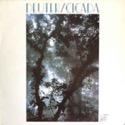Année de parution : 2020
Label : Music On Vinyl, Sony Music
Format : 2 × Vinyl, LP, Album, Reissue, Stereo
Global Communication
76:14 |
Année de parution : 1982
Label : Kuckuck
Format : Vinyl, LP, Album
Deuter
Cicada |
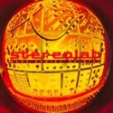Année de parution : 2016
Label : Tricatel
Format : Vinyl, LP, Limited Edition
Michel Houellebecq
Présence Humaine |
 Année de parution : 2019 Année de parution : 2019
Label : Duophonic Ultra High Frequency Disks, Warp Records
Format : 2 × Vinyl, LP, Album, Reissue, Remastered
Stereolab
Mars Audiac Quintet |
|
|
 Année de parution : 2012 Année de parution : 2012
Label : Ninja Tune
Format : Vinyl, LP, Album, Stereo
Grasscut
Unearth |
 Année de parution : 2020 Année de parution : 2020
Label : Posh Isolation
Format : Vinyl, LP, Album
Croatian Amor
All In The Same Breath |
Année de parution : 2017
Label : Rvng Intl.
Format : Vinyl, 12"
Visible Cloaks
Lex |
 Année de parution : 2018 Année de parution : 2018
Label : Apollo
Format : 2 × Vinyl, LP, Album, Reissue, Remastered
Aphex Twin
Selected Ambient Works 85-92 |
 Année de parution : 2012 Année de parution : 2012
Label : Cranes Records
Format : 2 × Vinyl, LP, Album, Limited Edition, Gray
The December Sound
The December Sound (The Silver Album) |
|
|
 Année de parution : 2020 Année de parution : 2020
Label : Temporary Residence Limited – TRR346LP-C1
Format : Vinyl, LP, Album, Limited Edition, Bronze Pearlescent
Inventions
Continuous Portrait |
Année de parution : 2015
Label : Cinq 7 – 3319776
Format : 2 × Vinyl, LP, Reissue
Dominique A
La Musique / La Matière |
Année de parution : 2014
Label : Naïve – NV831761, Naïve – M83-1 LP
Format : 2 × Vinyl, LP, Album, Reissue
M83
M83 |
 Année de parution : 2014 Année de parution : 2014
Label : Barclay – 067 507 1
Format : Vinyl, LP, Album, Reissue
Louise Attaque
Louise Attaque |
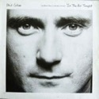Année de parution : 1979
Label : Harvest – 2 C 008-63494
Format : Vinyl, 7", 45 RPM, Single
Pink Floyd
Another Brick In The Wall (Part II) |
|
|
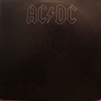Année de parution : 1989
Label : WEA – 257 672-0
Format : Vinyl, 12", 45 RPM
Phil Collins
In The Air Tonight (88' Remix) And (Extended Version) |
 Année de parution : 1980 Année de parution : 1980
Label : Atlantic – ATL 50 735
Format : Vinyl, LP, Album
AC/DC
Back In Black |
Année de parution : 1972
Label : RCA Victor – 443.039
Format : Vinyl, LP, Album
Ennio Morricone
Il Était Une Fois La Révolution (Bande Originale Du Film) |
 Année de parution : 1976 Année de parution : 1976
Label : Disques Festival – ALBUM 222
Format : 2 × Vinyl, LP, Compilation, Gatefold
Ennio Morricone
Bandes Et Musiques Originales |
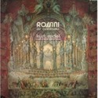Année de parution : 1983
Label : Supraphon – 204 918
Format : Vinyl, LP, Album, Reissue, Remastered, Stereo, Gatefold
Dvorak - Orchestre Philharmonique Tchèque, Vaclav Neumann
Symphonie N° 9 "Du Nouveau Monde" |
|
|
 Année de parution : 1979 Année de parution : 1979
Label : Forlane – UM 3500
Format : Vinyl, LP, Album
Rossini, Kurt Redel, Orchestre d'Etat Du Palatinat Rhénan
Les Ouvertures |
 Année de parution : 1971 Année de parution : 1971
Label : Philips – 6500 153
Format : Vinyl, LP, Stereo, gatefold
Schubert - Sándor Végh - Sandor Zöldy - Georges Janzer - Paul Szabo - Pablo Casals
Quintette A Cordes, Op. 163 |
 Année de parution : ? Année de parution : ?
Label : Decca – 7.054
Format : Vinyl, LP, Stereo
J.S. Bach - Elly Ameling, Helen Watts, Peter Pears, Tom Krause, Manécanterie De Lubeck, Hans-Jürgen Wille, Orchestre De Chambre De Stuttgart, Karl Münchinger
Oratorio De Noël |
Année de parution : 1983
Label : EMI America – 2C 070-400165
Format : Vinyl, LP, Album, Stereo
David Bowie
Let's Dance |
 Année de parution : 1977 Année de parution : 1977
Label : A&M Records – AMLH 64306
Format : Vinyl, LP, Album, Reissue, Stereo, Gatefold
Supertramp
Indelibly Stamped |
|
|
 Année de parution : 1987 Année de parution : 1987
Label : A&M Records – 393908-1
Format : Vinyl, LP, Album
Joe Jackson
Will Power |
Année de parution : 2010
Label : City Slang – SLANG9550064
Format : Vinyl, LP, Album, Reissue, 180 Gram
The Notwist
Neon Golden |
Année de parution : 2013
Label : DOL – DOL979HG
Vinyl, LP, Album, Reissue, Gatefold
Wes Montgomery
Boss Guitar |
Année de parution : 2017
Label : DOL – DOL881HG
Format : Vinyl, LP, Album, Reissue, 180 Gram
Kenny Burrell
Midnight Blue |
Année de parution : 2019
Label : Thrill Jockey – THRILL 050
Format : 2 × Vinyl, LP, Album, Reissue, Clear with Black & White Hi-Melt
Tortoise
TNT |
|
|
 Année de parution : 2020 Année de parution : 2020
Label : Flenser Records – FR42, Enemies List Home Recordings – EL04
Format : 2 × Vinyl, LP, Limited Edition, Reissue, Remastered, Repress
Have A Nice Life
Deathconsciousness |
 Année de parution : 1979 Année de parution : 1979
Label : Polydor
Format : LP, Album, RE, RP
Evangelos Papathanassiou
L'Apocalypse Des Animaux |
 Année de parution : 2017 Année de parution : 2017
Label : Columbia – COL 475959 1
Format : Vinyl, LP, Album, Reissue
Nas
Illmatic |
Année de parution : 2016
Label : Mute – Stumm172, BMG – Stumm172
Format : 2 × Vinyl, LP, Album, Limited Edition, Reissue, 180 Gram
Moby
Play |
Année de parution : 2012
Label : Studio Media (3) – VNL 12224 LP
Format : Vinyl, LP, Album, Reissue, 180 Gram
Sonny Rollins
Saxophone Colossus |
|
|
Année de parution : 2012
Label : Studio Media (3) – VNL 12222 LP
Format : Vinyl, LP, Album, Reissue, 180Gram
John Coltrane
My Favorite Things |
 Année de parution : 2016 Année de parution : 2016
Label : Infiné
Format : 2xLP, Album
Murcof x Vanessa Wagner
Statea |
 Année de parution : 2010 Année de parution : 2010
Label : Ici D'Ailleurs – IDA068
Format : 2 × Vinyl, LP, Album
Chapelier Fou
613 |
 Année de parution : 2012 Année de parution : 2012
Label : Morr Music – MM111
Format : Vinyl, LP, Album
Orcas
Orcas |
Année de parution : 2018
Label : Universeul – VINYLE 07
Format : Vinyl, LP, Album, Repress
Odezenne
Dolziger Str.2 |
|
|
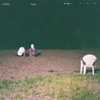Année de parution : 2020
Label : Jazzman – JMANLP122
Format : 3 × Vinyl, LP, Compilation
Various
Spiritual Jazz XII: Impulse! (Esoteric, Modal & Progressive Jazz From The Impulse! Label 1962-75) |
Année de parution : 2020
Label : Editions Mego – EMEGO289
Format : 2 × Vinyl, LP, Album, Stereo
KMRU
Peel |
Année de parution : 2017
Label : Ideologic Organ – SOMA025
Format : 2 × Vinyl, LP, Album, Stereo
The Necks
Unfold |
 Année de parution : 2020 Année de parution : 2020
Label : Warp Records – WARPLP304X
Format : Vinyl, LP, Album, Limited Edition, Silver
Yves Tumor
Heaven To A Tortured Mind |
Année de parution : 2019
Label : Editions Mego – EMEGO289
Format : Vinyl, LP, Album
Mondkopf
How Deep Is Our Love? |
|
|
Année de parution : 2017
Label : Blue Note – BST 84140
Format : Vinyl, LP, Album, Reissue, Stereo, 180gram
Joe Henderson
Page One |
Année de parution : 2016
Columbia
Format : Vinyl, LP, Album, Reissue, 180g
Charles Mingus
Mingus Ah Um |
Année de parution : 2016
Label : Blue Note – BST 84112
Format : Vinyl, LP, Album, Reissue, 180g
Dexter Gordon
Go! |
Année de parution : 2016
Label : Impulse! – AS-9183
Format : Vinyl, LP, Album, Reissue, Stereo, Gatefold
Charlie Haden
Liberation Music Orchestra |
Année de parution : 2016
Label : Verve Records – MGV-8005
Format : Vinyl, LP, Album, Reissue, Repress, 180 Gram
The Quartet Of Charlie Parker
Now's The Time |
|
|
Année de parution : 2016
Label : Blue Note – BST 84194
Format : Vinyl, LP, Album, Reissue, Stereo, 180g
Wayne Shorter
Speak No Evil |
 Année de parution : 2016 Année de parution : 2016
Label : Blue Note – BST-81595
Format : Vinyl, LP, Album, Reissue, Repress, 180g
Cannonball Adderley
Somethin' Else |
 Année de parution : 2016 Année de parution : 2016
Label : Verve Records – V6-8545, Verve Records – 009 8545
Format : Vinyl, LP, Album, Reissue, 180g, Gatefold
Stan Getz / João Gilberto Featuring Antonio Carlos Jobim
Getz / Gilberto |
 Année de parution : 2016 Année de parution : 2016
Label : Blue Note – 4163, Blue Note – BLP 4163
Format : Vinyl, LP, Album, Reissue, 180g
Eric Dolphy
Out To Lunch! |
 Année de parution : 2016 Année de parution : 2016
Label : United Artists Jazz – UAJ 14017
Format : Vinyl, LP, Album, Reissue, 180g
Duke Ellington • Charlie Mingus • Max Roach
Money Jungle |
|
|
 Année de parution : 2017 Année de parution : 2017
Label : Circa – WBRLP4, Circa – 7243 8 45599 1 5, Virgin – WBRLP4, Virgin – 7243 8 45599 1 5
Format : 2 × Vinyl, LP, Album, Reissue
Massive Attack
Mezzanine |
 Année de parution : 1974 Année de parution : 1974
Label : Virgin – 840 025/26, Virgin – 840.025/26
Format : 2 × Vinyl, LP, Album
Kevin Coyne
Marjory Razorblade |
|